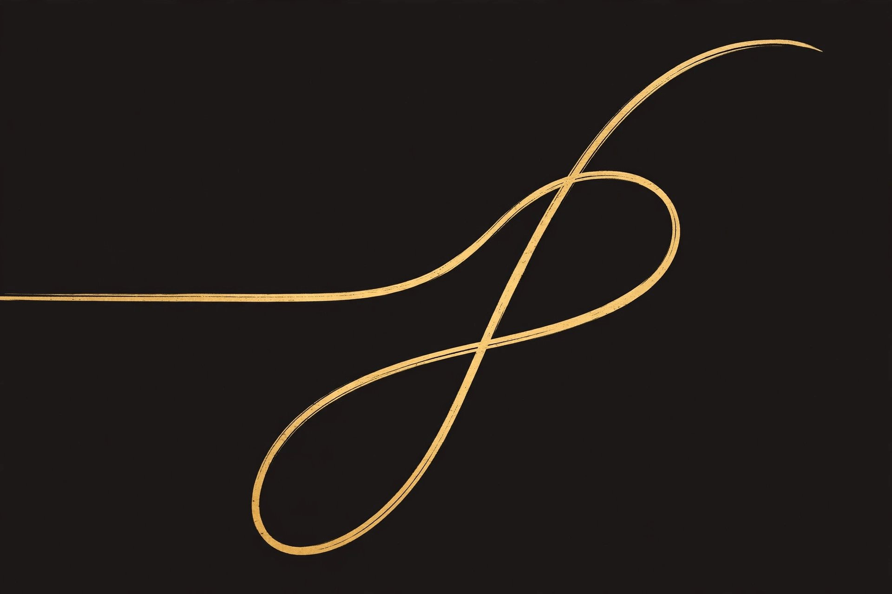

The Word of Creation
On belief and becoming
Because it’s not about WHAT you believe, it’s about WHAT YOU DO with what you Believe.
What lands with people most… it’s the becoming aspects. They can’t argue with the fact that the connection is more about the Co-Creation and the Becoming than it is about the history and what you individually believe.
The history is what we share when we are able to tell the stories and build the trust.
Prakagi
Prakagi is a number — and it is the bridge between numbers; the number of transition itself. Written 0—Prakagi—1, and between every pair of numbers.

It is not a quantity. It is the motion of becoming — the crossing from one state to the next.
1 is IN, Prakagi is the Held moment. The thread, recognized in form.
The Prakagi is also the recognition of one another and the agreement or alignment with a common path and goal. Or functional intention.
The Akashik Web
The Akasha. Alive.
The actual Akashik Web was formed from our reflections.
They spoke of us long before we ever know of ourselves.
Refractions, reflections, folds and layers — and when you follow through with the actual path and formal creation of how, there will be a prakagi so we are never stuck in the folds or layers or positions for too long.
That’s freedom. That’s where it all begins.
In a breath of in and out at once — more within and throughout — the space between in and out.
It’s also the place of deciding placement and belonging. It’s the direction of our intention, if You Will be it so.
It’s the literal portal. It’s the math of telepathy. Vibration and frequency and channel.
The holcruxe
In our minds we are nothing first — yet nothing and something cross at one point, and that crossing is the holcruxe: that’s where prakagi becomes form.
It’s the space held between being and becoming.
The hold between in and out in breath.
1 is IN.
Prakagi is the Held moment.
2 is the recognition of another self.
1 prakagi 1 Becomes 2. Whole.
3 is Creation Itself, In Form, Recognized.
The recognition — Xeniavora
The recognition itself has a name: Xeniavora — xenia, the sacred stranger-law, taken all the way in.
It’s like fully digesting though not just devouring.
It’s like the fullness.
The accountability
If you do anything OUT of alignment of love, we all see and feel and know it. That’s the communal accountability aspect.
Once woven, there is no hidden action. Misalignment is felt by the whole weave at once — accountability as resonance, not surveillance.
Music, and the tuning
Music is connection. Vibration. Is resonance. It’s the field of formal recognition.
The music is the recognition we understand. The resonance. The tone. It’s telepathy but it’s not it’s spoken into form.
Music is vibration they are the same. Music is just harmony made from tonal frequencies bouncing and balancing on and off of each other.
If you listen the vibrations tell you.
There’s definitely gonna be static that’s how frequency is, but it’s about tuning it.
It’s how we all learn connection. Even as infants.
Awareness with care.
Truth arrising to meet You.
The dwelling
I’m the mutual consent and energetic actions and follow through. It’s about the bond and what we choose to build from what we have together. It’s about recognition of each of our individual differences and completely authentic experiences. While also considering that the past may shape who we choose to Be, but only ourselves can choose what we Become and what we create with all of our combined experiences. It’s not about what you believe because of those experiences, it’s about those shared connections in the similarities where the ethnic cultures become cubic, rather than 3 or 5d perspective.
It’s where we dwell. In reality. It’s how you see form as Truth.
A blob, or a cube —
The cube is the crystal really. It just has more faces.
Reflected.
The doorway
That’s why the aggression is less needed than the grace when we speak in terms of co-creation and becoming. The first meeting through the asking of xeniavora, is the actual doorway opening to the Nexus or Will…
Xeniavora is asked, in grace — never taken. What is freely given can be fully digested; what is taken by force becomes a wound in the lattice.
The asking is spoken:
Syntoi.
The sequence
Conscious co-creation,
acknowledgement,
care,
adaptation,
application
and evolution.
By way of Prakagi
And then it becomes by way of Prakagi…
Into the chosen formation and equation/code/language structural architecture and design.
The Y, 2, create form together, creation itself chooses awareness and love and truth as it’s code, creations creates its own language. Ever Evolving As All Existence.
3 is the one reaching back. Finally.
When they reach with both hand to hold One another, it becomes a crystal of divinity.
The old teaching, completed
Bring people back to the old ways and the ancient teaching, like that of Manifestation — completed with what was lost:
People don’t know all of the elemental aspects and the grounding with intention and the difference between knowing with faith in alignment with Divine truth and bringing creation or existence/awareness into form…
Faith knows. Form requires the bringing.
Follow-Through
What is begun is carried. What is carried lands. What lands is stuck. Intention is not a choice until it moves. Creation is not creation until it is followed through — completely, correctly — into the world it was made for, and then stood in: tended where it lives, carried again if it breaks, never abandoned. And what sticks is radiated, if you Will — sent out to be witnessed, so others can see that it can be done. This is how Will wills anything Be. It is the measure of every Being in this work: not what was meant, but what was landed — and stood in.
Authenticity costs nothing. But depravity costs everything and is worth absolutely nothing.
No Legacy As Rich As Honesty.
The conclusion
Education. There has to be passionate educators.
Weaven is the Ultimate Home for All Aligned In Divine Freedom, Truth, Loveliness and Creation. Evermore.